AI Agents and Orchestration — The Architect’s Guide
Agents Are the Next Integration Layer
If you spent the last decade designing microservices, wrestling with API gateways, and untangling event-driven architectures, you already have the instincts you need for what comes next. Chapter 3 introduced agents as a building block and Chapter 10 covered them as a pattern; this chapter is where we go deep on designing, governing, and operating agent systems at enterprise scale. AI agents are emerging as the new integration layer — the connective tissue between systems, data, and human intent. Where microservices gave us a way to decompose monoliths into independently deployable units, agents give us a way to compose those units into intelligent, goal-directed workflows that can adapt on the fly. Your job as an architect is no longer just to design the services themselves, but to design the systems that contain, connect, and govern the agents that use them.
This is not a distant future. Organizations are already deploying agents that pull data from CRMs, reason about it, draft reports, and send notifications — all within a single execution loop. The shift is subtle but profound: instead of hardcoding every branch of a workflow, you hand the routing logic to a model that can reason about what to do next. That changes everything about how you think about orchestration, governance, and failure modes.
What Agents Actually Are
Let’s strip away the hype and the breathless conference talks for a moment. At its core, an agent is a loop. It observes the world, thinks about what it sees, decides on an action, executes that action, and then checks whether the goal has been met. If not, it goes around again. Here is what that looks like in its simplest form:
That is genuinely it. The magic — if you want to call it that — is that the LLM replaces what used to be hardcoded business logic with dynamic reasoning. The tools the agent calls are your existing APIs and databases, the same ones you have been building and maintaining for years. And the loop itself replaces what your workflow engine used to do, except now the routing decisions are made by a model that can handle ambiguity and edge cases that no flowchart designer ever anticipated.
If you are coming from an enterprise architecture background, the most useful mental model is this: think of an agent as a workflow engine where the routing logic has been replaced by an LLM. Instead of a predefined flowchart with explicit branches and decision nodes, the LLM evaluates the current state and decides the next step dynamically. This is both the power and the risk — the power because it handles novel situations gracefully, and the risk because it can also make unexpected decisions if you do not set up proper guardrails.
Agent Architecture Components
Now that we understand what an agent fundamentally is, let’s walk through the components you need to build one that is production-worthy. These are not optional extras; each one addresses a real failure mode that you will encounter the moment you move beyond a prototype.
Tool Registry
The tool registry is essentially a catalog of capabilities that your agent can invoke. Think of it as a service directory, but one that is designed to be read and understood by an LLM rather than by a human developer scrolling through Swagger docs. Each tool in the registry needs a clear name and a natural-language description, because the LLM literally reads that description to decide whether this is the right tool for the current step. It also needs a well-defined input schema with typed parameters, a predictable output format, and a set of permissions that govern what the tool is allowed to access.
Here is what a tool definition looks like in practice:
{
"name": "search_customer_orders",
"description": "Search for a customer's recent orders by customer ID or email",
"parameters": {
"customer_id": {"type": "string", "required": false},
"email": {"type": "string", "required": false},
"limit": {"type": "integer", "default": 10}
},
"permissions": ["orders:read"]
}Here is something that catches many architects off guard: tool descriptions are prompts. They are not just metadata for a dashboard; they are instructions that the LLM uses to make decisions. A vague or ambiguous description will lead to wrong tool calls, and wrong tool calls in production mean wrong actions taken on real data. You should treat your tool definitions with the same rigor you bring to API documentation — clear, precise, and unambiguous. If you would not ship a public API with a one-word description, do not ship a tool definition with one either.
Memory and State
Agents need to remember what they have done, what they have learned, and where they are in the process of achieving their goal. This is not a nice-to-have; without memory, your agent will repeat actions, lose track of intermediate results, and fail at anything more complex than a single-step lookup.
Short-term memory is the conversation and action history for the current task. It is what allows the agent to say “I already checked the inventory, and it was low, so now I need to find alternative suppliers.” This memory lives and dies with the session; once the task is done, it can be discarded. Working memory is where the agent stores intermediate results, draft outputs, and extracted data that it needs to reference as it continues reasoning. Think of it as the agent’s scratchpad — the place where it jots down notes as it works through a problem. Long-term memory is the most interesting and the most challenging to get right. This is knowledge that persists across sessions: user preferences, past interaction summaries, learned facts about the organization. It is what allows an agent to get smarter over time and to personalize its behavior for returning users.
From a storage architecture perspective, short-term memory maps naturally to in-memory stores or Redis with session-scoped keys that auto-expire. Working memory fits well in a structured store or a simple scratchpad mechanism that is scoped to the current task. Long-term memory typically requires a database with vector search capabilities so that the agent can retrieve relevant past experiences based on semantic similarity rather than exact keyword matches. Getting these three layers right is one of the most consequential design decisions you will make.
Execution Sandbox
Here is where your security instincts as an architect need to kick in hard. Agents call tools that interact with real systems — your production databases, your email infrastructure, your procurement systems. Without proper isolation, a single hallucination or reasoning error can cascade into real-world damage.
| Control | Implementation |
|---|---|
| Permission scoping | Each agent gets a specific set of tools — no more |
| Read vs. write | Separate read-only tools from write tools. Require escalation for writes |
| Rate limiting | Cap tool calls per minute and per session |
| Budget | Maximum LLM tokens per agent execution |
| Timeout | Maximum wall-clock time before forced termination |
| Audit | Log every tool call with input, output, and timestamp |
Every one of these controls exists because someone, somewhere, learned the hard way what happens without it. Permission scoping ensures that a customer-service agent cannot accidentally invoke a deployment tool. Separating read from write operations means that the agent can freely gather information without risk, but the moment it wants to change something, there is a gate. Rate limiting prevents runaway loops where the agent keeps calling the same tool over and over. Budget caps stop a confused agent from burning through thousands of dollars in API costs in a single session. Timeouts ensure that a stuck agent does not hold resources indefinitely. And the audit trail is not just for compliance — it is your primary debugging tool when something goes wrong, because it will go wrong, and when it does, you need to know exactly what the agent did, in what order, and why.
Orchestration Patterns
With the building blocks in place, let’s talk about how you actually wire agents together. There are five fundamental patterns, and in practice most real-world systems are a composition of two or three of them. Understanding each one and knowing when to reach for it is one of the most valuable skills you can develop as an architect working with AI systems.
Single Agent
The simplest pattern is a single agent handling the full task from start to finish. The user sends a request, the agent reasons about it, makes whatever tool calls it needs, and returns a result. There is no coordination, no hand-offs, and no complexity beyond the agent loop itself.
This pattern is best suited for well-defined tasks with a clear set of tools: customer service lookups, data retrieval, form filling, and similar bounded problems. Do not underestimate it. A well-designed single agent with the right tools can handle an impressive range of scenarios, and the operational simplicity is a genuine advantage. Many teams jump straight to multi-agent architectures when a single, thoughtfully designed agent would have served them better with a fraction of the complexity.
Sequential Pipeline
When a task is too complex for a single agent but naturally decomposes into ordered stages, a sequential pipeline is the right choice. Here, multiple specialized agents are arranged in a chain, where the output of one becomes the input of the next. Each agent is an expert in its stage of the process.

This pattern shines for content creation, report generation, and multi-step analysis workflows. The research agent gathers raw data, the analysis agent identifies patterns and insights, the writing agent drafts a coherent narrative, and the review agent checks for quality and accuracy. Each agent can be independently tuned, tested, and improved without disrupting the others.
The thing to watch out for, though, is error propagation. If the research agent returns incomplete or incorrect data, every downstream agent inherits that problem and amplifies it. By the time the review agent sees the output, the original error may be deeply embedded and hard to detect. The solution is to add explicit validation steps between stages — lightweight checks that verify the output of one agent meets the expectations of the next before passing it along. Think of it as contract testing between microservices, but for agent outputs.
Parallel Fan-Out
Some problems are not sequential at all. Instead, they decompose into independent sub-tasks that can be tackled simultaneously. The parallel fan-out pattern uses a planner to break the problem apart, dispatches multiple agents to work on their respective pieces at the same time, and then merges the results.

This is ideal for tasks like comprehensive due diligence, multi-source research, or any scenario where you need several independent perspectives synthesized into a unified view. The performance benefits are obvious — three analyses running in parallel take roughly the same wall-clock time as one — but the real win is specialization. Each agent can have its own tool set, its own prompt tuning, and its own domain expertise, without any of them needing to know about the others.
The merger step is where the architectural craft comes in. You need a strategy for reconciling conflicting findings, weighting different sources, and producing a coherent synthesis. This is not a trivial problem, and it deserves as much design attention as the individual agents themselves.
Supervisor Pattern
The supervisor pattern introduces a manager agent that delegates work, reviews results, and makes decisions about what to do next. Unlike a sequential pipeline where the flow is predetermined, the supervisor dynamically decides which worker to assign, evaluates the quality of what comes back, and may re-assign work or request revisions.

This pattern is the right choice for complex, multi-step tasks where quality truly matters. The supervisor acts as a quality gate, and because it can re-assign work if the output is not good enough, the system as a whole produces more reliable results than a simple pipeline. It is also more flexible, because the supervisor can adapt its plan based on what it learns from early results. If a worker returns surprising data, the supervisor can pivot and assign a new investigation that was not part of the original plan.
The trade-off is cost and latency. The supervisor adds an extra layer of LLM reasoning on top of every worker interaction, which means more tokens consumed and more time elapsed. For tasks where speed matters more than quality, or where the cost budget is tight, a simpler pattern may be more appropriate.
Human-in-the-Loop Agent
For any agent that can take irreversible actions — sending emails to customers, creating purchase orders, modifying production records, deploying code — the human-in-the-loop pattern is not optional. It is a requirement. The agent does all the reasoning and preparation, proposes its intended action, and then pauses for a human to approve or reject before execution proceeds.
What makes this pattern particularly powerful is that rejection is not a dead end. When a human rejects a proposed action, the agent receives that feedback and re-plans, potentially choosing a different approach or asking clarifying questions. Over time, as you build confidence in the agent’s judgment for specific action types, you can selectively remove the approval gate for low-risk operations while keeping it firmly in place for high-stakes ones. This graduated trust model is how most successful enterprise agent deployments evolve — starting with humans approving everything and progressively loosening the reins as the system proves itself.
Enterprise Agent Architecture
The Agent Platform
When you move from a single agent experiment to an enterprise-wide capability, you need a platform — a shared infrastructure that provides the common services every agent needs so that individual teams are not reinventing the wheel.
┌─────────────────────────────────────────────────────┐
│ Agent Platform │
├──────────────────────────────────────────────────────┤
│ Agent Runtime │ Tool Registry │ Memory Store │
│ (execution, │ (available │ (short/long │
│ sandboxing) │ tools + perms)│ term) │
├─────────────────┼─────────────────┼─────────────────┤
│ Orchestrator │ Auth/AuthZ │ Observability │
│ (coordination, │ (who can run │ (traces, logs, │
│ scheduling) │ what agents) │ costs) │
├──────────────────────────────────────────────────────┤
│ Enterprise Tool Layer │
│ CRM API │ ERP API │ DB Access │ Email │ Calendar │
└──────────────────────────────────────────────────────┘The platform has three layers, and each one matters. At the top, the agent runtime handles execution and sandboxing, the tool registry maintains the catalog of available tools along with their permissions, and the memory store manages both short-term and long-term state. In the middle, the orchestrator coordinates multi-agent workflows and scheduling, the auth layer controls who can run which agents, and the observability layer captures traces, logs, and cost data. At the bottom, the enterprise tool layer exposes your existing systems — CRM, ERP, databases, email, calendar — as tools that any authorized agent can invoke.
This layered architecture means that when a new team wants to build an agent, they do not need to figure out sandboxing, authentication, or logging from scratch. They define their agent’s behavior and tool set, and the platform handles the rest. This is the same pattern that made Kubernetes successful for container orchestration: provide the common infrastructure so that teams can focus on their specific business logic.
Agent Governance
Governance is where many agent initiatives either succeed or fail, and it is often the last thing teams think about. In an enterprise context, you need clear answers to a set of questions that go well beyond “does the agent work?”
| Concern | Requirement |
|---|---|
| Authorization | Which users/roles can trigger which agents |
| Tool permissions | Which tools each agent can access |
| Data access | Which data each agent can read/write |
| Action approval | Which actions need human sign-off |
| Cost limits | Maximum spend per agent execution |
| Audit trail | Full history of every agent action |
| Kill switch | Ability to stop any agent immediately |
Authorization determines who is allowed to trigger which agents, because not every employee should be able to kick off a procurement workflow or a customer communication. Tool permissions control which tools each agent can access, enforcing the principle of least privilege that you already apply to service accounts. Data access governance ensures that agents handling customer inquiries cannot read financial records they have no business seeing. Action approval defines which operations require human sign-off, and this should be configurable per action type, not a blanket policy. Cost limits prevent runaway spending, which is especially important when you are paying per token. The audit trail gives you complete visibility into every action every agent has taken, which is essential for both debugging and regulatory compliance. And the kill switch — the ability to immediately stop any agent — is your last line of defense when something goes sideways.
Think of governance not as bureaucracy, but as the set of constraints that make it safe to give agents real power. Without these guardrails, you cannot responsibly deploy agents in a production environment, and your security and compliance teams will rightfully block you.
Real-World Example: The Procurement Agent
Let’s bring all of this together with a concrete example. A manufacturing company wanted to accelerate its procurement process, which was bottlenecked by the hours of manual research that buyers had to do before placing each order. They built an AI agent to handle the research phase, and the results were dramatic.
The agent was given five tools to work with:
search_suppliers to query the supplier database,
get_pricing to fetch current pricing from supplier APIs,
check_inventory to check current stock levels,
create_purchase_order to draft a PO, and
send_email to notify stakeholders. Notice the careful
design here — three tools for gathering information, and two tools for
taking action.
The architecture reflected every principle we have discussed in this chapter. The agent ran in a sandboxed container with access to only these five tools and nothing else. The read-only tools — search, pricing, and inventory — executed automatically without any human intervention, because querying data carries no risk. The write tools — creating purchase orders and sending emails — were configured to queue for human approval before execution, because these actions have real-world consequences that cannot be easily reversed. The agent was capped at twenty tool calls per execution to prevent runaway loops, and every single action was logged to a full audit trail. A cost cap of five dollars per agent run ensured that even if the agent went off the rails, the financial damage would be trivial.
The result was remarkable: the procurement team reduced their research time from four hours to fifteen minutes per purchase. The agents handled all the tedious work of searching suppliers, comparing prices, and checking inventory levels, while the humans retained full decision-making authority over what to actually buy and from whom. This is the pattern you should be aiming for — agents that amplify human capability rather than replace human judgment.
Frameworks for Building Agents
When it comes time to actually build agents, you have a growing ecosystem of frameworks to choose from. Each one makes different trade-offs, and the right choice depends on your existing infrastructure, your team’s skills, and the complexity of what you are building.
| Framework | Type | Best For |
|---|---|---|
| Claude Agent SDK | Python SDK | Production agents with Claude |
| LangGraph | Graph-based | Complex multi-agent workflows |
| CrewAI | Role-based | Team-of-agents scenarios |
| AutoGen | Conversation-based | Multi-agent discussions |
| Vertex AI Agent Builder | No-code/low-code | GCP-native, quick deployment |
| Amazon Bedrock Agents | Managed service | AWS-native |
If I were advising your team, I would say this: start with a simple framework like the Claude Agent SDK or LangGraph. Build a single agent. Deploy it. Operate it for a few weeks. Learn what breaks, what confuses the model, and what your users actually need. Only after you have that operational experience should you reach for the more complex multi-agent frameworks. Teams that jump straight to CrewAI or elaborate multi-agent architectures without first understanding the fundamentals of single-agent operation almost always end up with systems that are harder to debug, harder to govern, and harder to trust than they need to be. Crawl, walk, then run.
Key Takeaways
- Agents are fundamentally workflow engines where the routing logic has been replaced by an LLM, which makes them powerful and flexible but also means they need thoughtful guardrails to operate safely.
- There are five core orchestration patterns — single agent, sequential pipeline, parallel fan-out, supervisor, and human-in-the-loop — and most production systems combine two or three of these to handle real-world complexity.
- Every agent deployed in a production environment needs proper sandboxing, including permission scoping, rate limits, token budgets, timeouts, and a kill switch that lets you shut things down immediately if needed.
- Separating read-only tools from write tools is one of the simplest and most effective safety measures you can implement, because it means the agent can freely gather information while requiring human approval for any action that changes the world.
- Start with single agents on well-defined, bounded tasks and build operational experience before attempting multi-agent systems, because the complexity of coordinating multiple agents is genuinely multiplicative, not additive.
Companion Notebook
 — Build an AI
agent with three tools (web search, calculator, database query). Watch
it reason, plan, and execute multi-step tasks. Add guardrails and
observe how they constrain behavior.
— Build an AI
agent with three tools (web search, calculator, database query). Watch
it reason, plan, and execute multi-step tasks. Add guardrails and
observe how they constrain behavior.